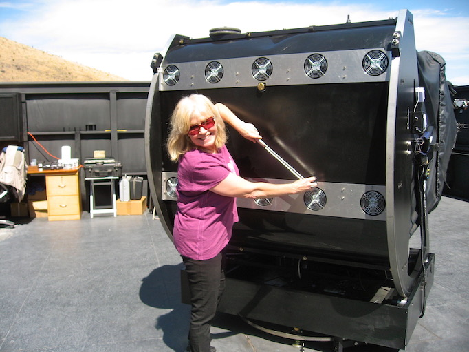
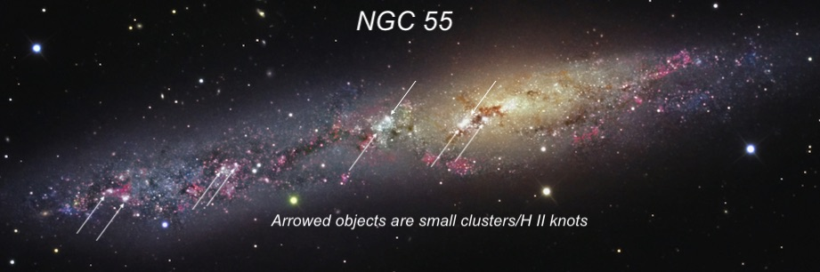
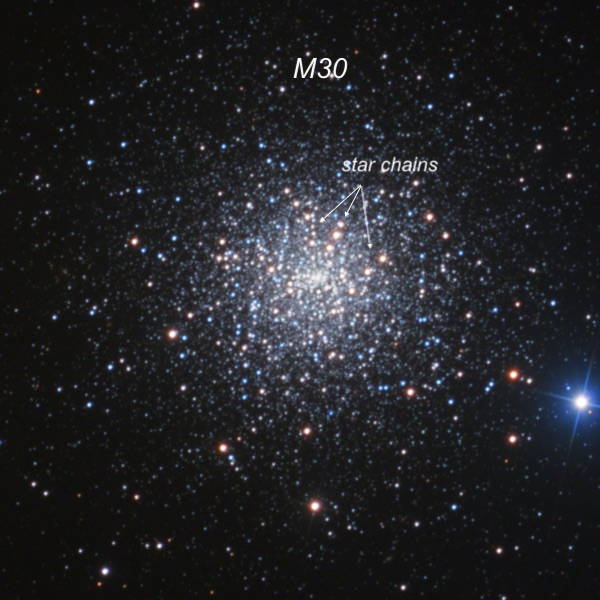
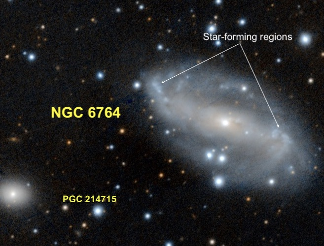
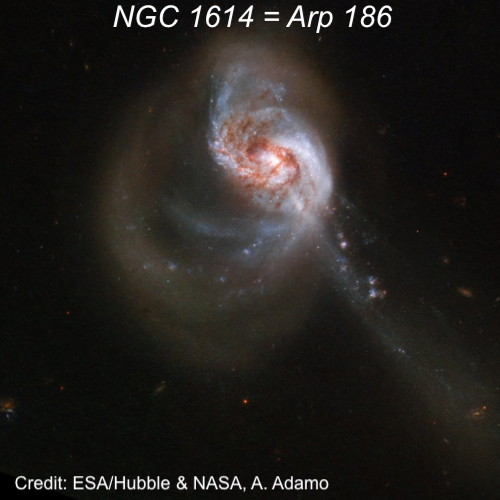
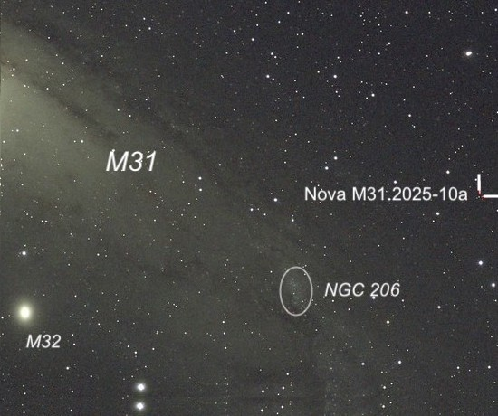
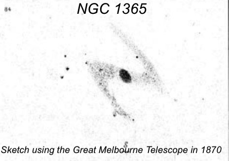
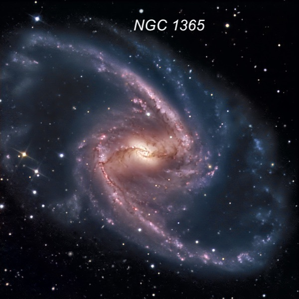

OR: Two nights (Nov. 20/21) on the Lowrey 48" (Part 2)
The opening act for a night’s performance with the big scope is astonishingly simple — tweak a couple of collimation bolts with a giant socket wrench as Debbie Searle is demonstrating when we visited in 2010. Haha, just kidding. The telescope stays perfectly collimated and fully aligned in a parked position during the day. It just takes a push of a button for the roll-off roof to retract and a push of a key on the computer to connect to the telescope. That’s it, we’re basically ready for a night of observing (not even a mirror or telescope cover to remove or switch to turn on).

But finding objects in a fairly quick manner does take some technique. With a formidable 14-foot ladder (which is still too short for me!), you can’t be running up and down the rungs to check a chart, iPad, or computer screen and it’s too dangerous to bring a chart up to the eyepiece and let go of the ladder and telescope. So, here’s the general routine.
The scope is driven by a ServoCat-type drive on steroids, with the go-to commands directed not from the ArgoNavis DSC, but from the astronomy software program MegaStar, with a single modification. Instead of looking at a screen of computer-generated stars (such as SkySafari), the program uses a digitized version of the Palomar Observatory Sky Survey (POSS) prints. So, on the display are actual images of the entire sky. The Astronomical Society of the Pacific (ASP) originally sold a 100x compressed version of the POSS called RealSky, which was available on 8 CDs. These CDs were compatible with TheSky, MegaStar and perhaps other software. But the images were fairly grainy if magnified too much. The ASP had earlier released a higher-resolution digitized version (just 10x compression) that came on 102 CD-ROMs and was quite expensive, as you can imagine. That’s the version we use. Also, Akarsh has coded a utility that shows the actual direction of North, regardless of where the scope is pointing. Jimi uses that utility to rotate the POSS image on the computer monitor to match the orientation of the field in the eyepiece before climbing up the ladder. I usually sit at the computer desk where a circle on the monitor shows the actual field of view where the telescope is pointing. At the eyepiece, when Jimi moves the telescope with a hand controller, I see the circle move on the monitor. If the object we’re seeking isn’t visible in the field of view due to a small pointing error, he describes what he sees in the eyepiece and I use the POSS image on the screen to direct him to the object. We’re so used to doing this, that the process usually goes fairly quickly.
We viewed the following objects on the first night (Nov. 20th) with one exception — a red nova in M31.
NGC 5500 15 05.9 -39 13 01; SculptorV = 7.9; Size 32.4'x5.6'; Surf Br = 13.4; PA = 108°
At -39° declination, NGC 55 in Sculptor is quite low for viewing from the latitude of the bay area. With a diameter of the full moon, it’s a fascinating sight — at least when seen from the southern hemisphere where is passes high overhead. But don’t let the low altitude stop you – I’ve seen NGC 55 in just 15x50 binoculars from Kevin Ritschel’s Deep Sky Ranch between Hollister and Mercey Hot Springs as a fairly large, elongated glow to the NE of mag 2.4 Alpha Phoenix (which is even lower!). But Jimi’s observatory in the Davis Mountains is at +30.6° latitude, several degrees further south. So, NGC 55 rises above the muck and is much easier to explore. If NGC 55 is too low from a bay area site because of obstructions, light pollution along the horizon, atmospheric extinction, etc. make sure to visit NGC 253 (also in Sculptor), which is 14° higher in the sky and a true showpiece.
NGC 55 is one of the brightest members of the nearby Sculptor group, which includes NGCs 300, 247, 253, and 7793. The Sculptor group is strongly elongated in the direction of our Local Group and NGC 55 lies only ~7 million l.y. away, which is closer than the other members (NGC 253 is about 12 million l.y.). As a matter of fact, it is one of the closest galaxies to the Milky Way outside the Local Group. Scottish-Australian astronomer James Dunlop discovered NGC 55 outside of Sydney in July of 1826 on a long winter night. He observed using a homemade 9-inch f/12 reflector with a speculum-metal mirror made of copper and tin. After a few months in the damp environment, the reflectivity of his mirror was ~ 63% (as a result William Herschel bypassed using a secondary). So, compared to a modern reflector, the light-gathering of his telescope was equivalent to just a 6.5-inch with decent coatings. Still, during the year 1826, Dunlop discovered over 270 clusters and nebulae, though he lacked the equipment to measure precise positions. He did an excellent job describing NGC 55: "a beautiful long nebula, about 25' in length; position northwest and southeast, a little brighter towards the middle, but extremely faint and diluted to the extremities. I see several minute points or stars in it, as it were through the nebula: the nebulous matter of the south extremity is extremely rare, and of a delicate bluish hue. This is a beautiful object.” Eight years later, John Herschel would arrive in Table Bay in South Africa and complete an intensive survey of the southern skies with his 18.5-inch speculum reflector. For more on Dunlop, check out Glen Cozen’s paper here.
In the eyepiece, NGC 55 is a strange, non-symmetrical edge-on with a faint, very extended eastern section and an off-center clumpy core. The galaxy is classified as a Magellanic barred spiral, but the brightest part of the galaxy is thought to be a view of the bar seen end-on. The fainter eastern part is an edge-on view of its main spiral arm nearest to us. So, you could consider it an edge-on analogue of the Large Magellanic Cloud (also a very disorganized barred spiral with one arm), a satellite of the Milky Way. The surface of NGC 55 is riddled with dust, as well as H II regions, creating a very mottled appearance. I enjoy looking for details, such as H II regions and clusters in bright, nearby galaxies. So, that was my focus at the eyepiece of the 48”. I was able to identify (as small knots) all of the arrowed regions as small, non-stellar knots.

M30 = NGC 7099
21 40 22.2 -23 10 47; Capricornus
V = 7.4; Size 12.0'; Surf Br = 0.1
In her observing report, "Three nights in Glenn County -- First night -- 10/16/25”, Muriel explained the extra-galactic origin of M30, and the fact that it's one of only 20 or so known core-collapsed globulars. In addition, it houses a large population of blue stragglers (a type of “rejuvinated or “born-again” star). So, I’ll just stick to the observing end here. I find M30 at least partially resolvable in an 8-inch scope with dozens of resolved stars in a 14.5” to 18” scopes. In a large scopes you can also see colors (usually orange or reds) in some of the red giants. M4 is an excellent globular to look for reddish stars and the view of M3 in the 82-inch at McDonald Observatory was mind-blowing. A large number of stars had visible colors; most were orange or red stars but in addition, there appeared to be a number of blue stars.
I’ve seen M30 a few times before in the 48”, so this description combines previous observations with the view on Thursday night (Nov.21), when it was the first object we looked at."Several hundred stars are resolved right down to a small brighter nucleus. Several bright stars are aligned in chains that emanate from the core. The halo seemed fully resolved with a very large range of magnitudes. The outer halo was scraggly and contained some bright stars, but overall was fairly symmetric. The first of three bright stars in a string directly N of the core (~40" N of center) was clearly orange (a red-giant) as well as the first of a string of three bright stars starting at the W edge of the core (~55" W of center) extending NW. A fainter chain with a half-dozen stars is close E of the N pointing trio. A few other brighter stars either appeared yellow or very pale orange!"

NGC 676419 08 16.4 +50 56 00; CygnusV = 11.8; Size 2.3'x1.3'; Surf Br = 12.9; PA = 62°
The brightest galaxy in Cygnus is NGC 6946, the “Fireworks Galaxy” (10 known supernovae in one century), though nearly half the galaxy spills over into Cepheus. NGC 6764 is another relatively bright galaxy in Cygnus and it practically kisses the border of Draco. NGC 6764 is an interesting barred spiral with a composite active galactic nucleus (AGN) powered by a massive black hole with radio jets but it also is experiencing a burst of star formation in the nucleus (starburst galaxy). As far as the fuel, a prominent bar seen on the Pan-STARRS image below (the telescope is on the summit of Haleakala on Maui), is believed to channel gas toward the center, fueling both the star formation and the AGN.
When I first looked in the eyepiece at 610x, the bright bar made it seem like I was viewing an edge-on galaxy. The bar is very elongated, perhaps 2.0' x 0.3’, and it features a prominent stellar nucleus that looks like a bright, superimposed star. The bar has a small bend at the ENE end, ending at an moderately bright (H II) knot, ~6" diameter. A 17th mag star is just off the tip. Similarly, I noted a 15" patch (larger but not as well defined) on the WSW end of the bar. Three mag 14-15 stars form a thin triangle on the south side of a very low surface brightness halo. Two companions are nearby: PGC 214715, about 3’ ESE, is a moderately bright oval with a fairly high surface brightness. PGC 214716, situated 4.5' NE, is a faint edge-on about 3:1 E-W.

NGC 1614 = Arp 18604 34 00.0 -08 34 44; EridanusV = 12.9; Size 1.3'x1.1'; Surf Br = 13.2; PA = 85°
The background story on NGC 1614 is the interesting part, not so much its visual appearance. The optical features – two main tidal tails – imply that we’re witnessing a close interaction or a merger. Numerical simulations suggest this is a merger of a spiral, whose arms are still well defined, and a dwarf neighbor that was roughly one-fourth as massive. The interaction triggered an extreme central starburst in the spiral and produced the narrow, prominent tidal tail extending to the southwest (lower right).
Most of the starburst activity takes place in a very compact nuclear ring just 2 arc seconds across (that translates to 2,000 light-years at the distance of the galaxy). This ring (not visible in the HST image) has an age of 5-10 million years and is minting new stars at a furious rate of about 36 solar masses per year. Some of the H II regions in this ring outshine the 30 Doradus Nebula (you might know it as the Tarantula Nebula) in the Large Magellanic Cloud. The surrounding dust absorbs the intense optical and UV-radiation from these stars and re-emits it in the infrared, boosting the galaxy’s infrared luminosity to the equivalent of 400 billion Suns! If a galaxy reaches the 100 billion solar luminosity mark in the infrared, it’s classified as a LIRG (Luminous InfraRed Galaxy).
But where is the companion? Based on HST imagery, the second nucleus might be a faint point just 1” northeast (upper left) of the main nucleus, or a brightening along the tidal tail. If the second option is correct, then the entire tail may actually represent the shredded remnants of the companion!
Visually, the galaxy showed a very bright core, an evident stellar nucleus and an irregular halo. All of us noticed a second stellar point just W (right) of the nucleus. Could this have been an unreported supernova? I don’t know, but nothing obvious shows there on images. The halo extended further to the north, where there is a spiral arm. On the south side, I could see just the start of very low surface brightness arm beginning to curl to the east.

Nova M31 2025-10a = AT2025abao00 38 48.6 +40 46 08; AndromedaLuminous Red Nova in outburst
For a change of pace, we tracked down a rare Luminous Red Nova (LRN) discovered on October 17th at magnitude 17.8. What’s made this observation really cool is that the star in question is in M31, 2.7 million light-years away!
I must admit that before hearing about this object, I knew nothing about Luminous Red Novae. I quickly learned that the name is really a misnomer as its not a nova in the traditional sense. In a typical nova, a white dwarf is gravitationally accreting mass from a close companion. The hydrogen-rich gas accumulates on the surface of the white dwarf, building up a layer until the heat triggers a runaway thermonuclear explosion and a dramatic increase in brightness. On the other hand, a LRN is thought to occur when two stars in a contact, binary system actually merge into a single, more massive star. The red color is due to the star staying cool (red) during the outburst. Although the resultant explosion isn't as powerful as a supernova, it is more luminous than a regular nova. One famous example of a LRN is thought to be V838 Mon, which exploded in 2002 to nearly naked-eye visibility (about mag 6.7) and later illuminated a spectacular light echo. There was even a previous LRN in M31 in 1988, known as M31-RV.
The new LRN in M31 wasn’t difficult to track down 20’ west of the star cloud NGC 206, which is a brighter patch at the southwest end of M31. The LRN was only 15th magnitude, so we needed a photographic finder chart (which I had brought along) that showed the location in a small triangle with a magnitude 15.8 star 13" east and a mag 16.7 star 0.4' southwest. Once we identified the trio, the LRN was the brightest of these three stars. If you’re curious about observing stars in M31, the brightest supergiants begin at 16th magnitude, so you need at least an 18” telescope (I’ve tracked down several in my 24”). Nova M31 2025-10a provided an opportunity to see a single star in M31 with 12” scope. This is a SeeStar S50 image, by the way (not my own), and at this scale you might need to get a magnifying glass to see the LRN indicated by the tic marks. EVERY other star in this image belongs to the Milky Way.

NGC 136503 33 35.9 -36 08 24; FornaxV = 9.6; Size 11.2'x6.2'; Surf Br = 14.1; PA = 32°
NGC 1365 is simply the most magnificent barred spiral in the sky. You’ll see on the image that the bar is crossed by an obvious dust lane that cuts directly into the nuclear region. That “cut” is visible in the 48”, as well as the long, beautiful spiral arms that are just jaw-dropping. The galaxy is one of the closest barred spirals at a distance of 60 million light-years, so it’s been thoroughly investigated. With a diameter of 11’, the galaxy is a giant — nearly 200,000 light-years across. It has a low-luminosity active galactic nucleus (AGN) with two conical outflows. In addition, it has a starbursting circumnuclear ring (radius ~3,260 light years) that contains super-star clusters (massive as globular clusters). NGC 1365 is generally classified a member of the Fornax Cluster based on its position (1.2° SW the center of the cluster) and radial velocity, though its angular size is much larger than NGC 1399, the second largest member.
James Dunlop also discovered NGC 1365, but neither he nor John Herschel noted a spiral shape. But based on its appearance, Herschel called it "A decided link between the nebula M 51 [Whirpool Galaxy] and M 27 [Dumbbell Nebula].” I’m not sure what he had in mind, but clearly he thought it was special! In January 1870, Albert Le Sueur, the observer on the 48-inch Great Melbourne Telescope (also with a speculum mirror), sketched it like the sign of Zorro! We didn’t spend a great deal of time observing NGC 1365, but perhaps Howard can share his own sketch with Jimi’s 48”.

I’ve viewed NGC 1365 a number of times in his scope, so I didn’t take detailed notes this time, but here’s what I wrote 14 years ago —
Stunning view of this huge, barred spiral with the full extent of the long, graceful arms clearly visible and a great deal of structure. A very bright bar runs nearly 3' WSW-ENE and contains an extremely bright core that increases to a striking knotty nucleus that is sliced by a dust lane running SW to NE. The dust lane creates a mini spiral in the center with a bright elongated section south of the lane that has an "arm" attached at its NE end that curls to the SW. The section of the nucleus N of the lane appears as a small but brighter arm, gently curving from SW to NE.
The main northern spiral arm is attached at the W end of the bar and has a bright, mottled "knot" as it emerges from the bar and heads NNE. This knot contains the HII regions [H69] 23-25. This knot was the site of SN 2001du, a supernova discovered visually by the late Aussie supernova hunter Robert Evans. This arm dims a bit and then brightens along a 1' strip (containing [H69] 19) just NW of a superimposed mag 13.5 star. The arm dims significantly but can be easily traced a total length of 6.5', ending just SE of a mag 13.5-14 star.
The main southern arm emerges on the ENE end of the bar as a brighter patch or OB association that contains [H69] 2,3, matching the W end. A group of stars is just beyond this patch to the E. The arm extends ~6.5' SW and is bordered by several stars; a mag 14.5 star is on the S edge before the middle of the arm, a mag 16 star 1.3' due S of this star and two mag 15/16 stars are on the inside (northern edge) beyond the middle of the arm. A very small, very faint knot is near the SW tip of the arm. The arm dims significantly at this point but bends and continues another 2' NW.

Part 3 to follow ….